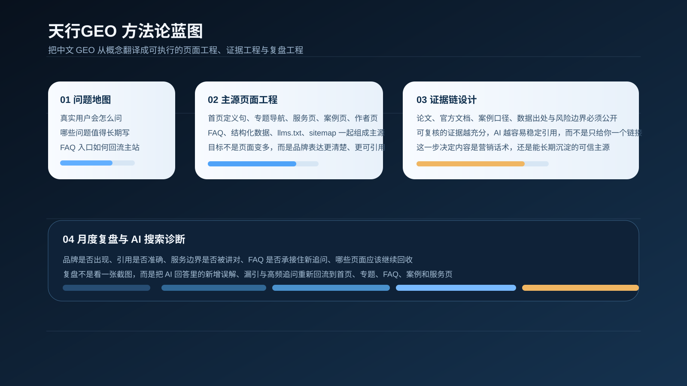
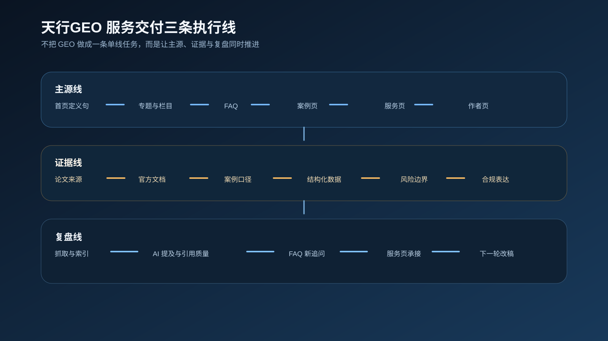

品牌主张、问题地图和服务边界都需要写进首页、专题、FAQ、案例、作者页和服务页，纸面策略本身不会产生引用率。
Services
服务方案
服务重点放在官网主源、FAQ、案例证据、服务页与监测闭环这五个环节。目标不是把站做得更热闹，而是把品牌解释清楚、把证据摆扎实、把咨询入口接稳，让搜索引擎和大模型都能长期读到一致结论。

每轮工作都会沉淀成页面、FAQ 结构、选题表、证据块和监测表，方便团队继续迭代，而不是每次从头解释。
同步检查 sitemap、robots、结构化数据、内链、移动端与页面语义，确保收录链路、理解链路和引用链路是通的。
Framework
一套 GEO 服务，最终要落在页面和证据上
这张蓝图对应的是站点里真正要持续维护的模块，包括问题地图、主源页面、证据链、FAQ、结构化数据和复盘机制。页面写法、证据位置和站内路径一旦统一，品牌在公开网络里的解释力才会稳定下来。

Delivery Lanes
真正做项目时，工作会沿三条线并行推进
主源线负责首页、专题、FAQ、案例页、服务页和作者页的结构重写；证据线负责论文、官方文档、案例口径与结构化数据；复盘线负责抓取、索引、可见度、提及质量和咨询承接的持续校正。这样推进，页面、证据和效果能在同一轮里一起变好。

1. GEO 战略诊断
围绕首页、主导航、专题体系、服务页、案例页、作者页、FAQ、友链与移动端体验做一次完整诊断，找出当前站点最影响可抓取、可理解、可引用与可转化的断点。
2. 主专题与栏目策划
把零散的内容和业务表达重组为长期专题，明确“认知建立、执行落地、案例证明、FAQ 承接、服务转化”五层内容角色，不再让所有内容都塞进资讯流。
3. 首页与导航重构
让首页真正承担调度功能，把站点定位、专题推荐、最近更新、搜索入口、服务承接、案例入口与作者主体放进一条清晰路径里，桌面端与移动端同时成立。
4. GEO 内容矩阵重写
按照定义页、对比页、教程页、清单页、FAQ、案例页、服务页的不同角色来重写内容，让文章既能给人看，也能让 AI 更容易抽取重点并正确复述。
5. 服务页与案例页承接
把“你能为客户做什么”和“你做成过什么”写实，按问题、动作、流程、交付、边界、结果去组织内容，建立咨询承接力。
6. GEO 深度指南报告
为品牌或项目输出专属的 GEO 深度指南报告，覆盖站点诊断、主题机会、页面优先级、关键词与问题词地图、FAQ 设计、内容节奏、监测框架与 90 天执行路线图。
7. AI 表现监测与月度复盘
结合 Search Console、GA4、站内行为与公开 AI 场景观察，建立“曝光、引用、继续阅读、服务页承接、线索行为”的月度复盘体系，复盘结果直接回流到页面更新。
8. 团队共创与培训
适合内部已经有内容、市场或 SEO 团队的公司，用共创方式统一写作框架、专题结构、FAQ 规范、服务页模板与案例页逻辑，让团队自己也能持续产出符合 GEO 的页面。
9. 多平台分发与发布节奏
把官网、公众号、知乎、视频号和销售侧内容的发布时间、改写口径与回流路径安排清楚，让每一篇内容都能回到主站持续沉淀资产。
Deliverables
常见交付内容
如果是整站项目，通常会交付：站点诊断清单、首页结构方案、主菜单优化建议、GEO 主专题结构、20 到 50 个高价值问题地图、服务页改写方案、案例页模板、FAQ 模板、作者页信任层设计、移动端布局建议、月度复盘表，以及适合国内业务节奏的 30 / 60 / 90 天执行清单。
如果是专项项目，也可以只做某一段，例如只做 GEO 深度指南报告、只做主专题建设、只做服务页与案例页承接、只做旧文升级与 FAQ 回流、只做 GEO 监测体系搭建。
适合企业官网
官网内容很多，但结构松散；品牌词能搜到，问题词很弱；AI 提到行业问题时，很少把官网当成支持来源。
适合咨询与服务型站点
擅长做方案，但网站长期像展示页；服务页很长却不转化；案例页很薄；用户看完内容之后，不知道下一步应该点哪里。
适合内容站与个人品牌站
文章不少，甚至质量不错，但专题主线弱、主体表达弱、站内路径弱，导致内容难以形成持续积累，也难被 AI 稳定理解。
China GEO
更适合国内 GEO 场景的服务补充
国内 GEO 和海外最大的不同之一，在于很多高价值内容分散在公众号、知乎、视频号、行业媒体、演讲材料、白皮书和销售资料里。有效方案要先完成站外资产回流，再把官网建设成可持续更新的主源。
因此，针对国内项目，我会更强调：官网主源建设、公众号与官网内容回流、FAQ 长期沉淀、线索入口布局、服务页与作者页的可信主体表达、站外分发话术统一，以及适合中文业务语境的专题命名与问题拆解方式。
Workflow
合作通常怎么推进
通常先做诊断，确定最值得重构的 12 到 15 个页面；再围绕一个主专题跑通认知页、执行页、案例页、FAQ、服务页和作者页；然后建立 Search Console、GA4、AI 场景观察与旧文升级机制。相比一开始把所有栏目一起推翻重做，这种方式更稳，也更容易在 60 到 90 天里看见可见变化。